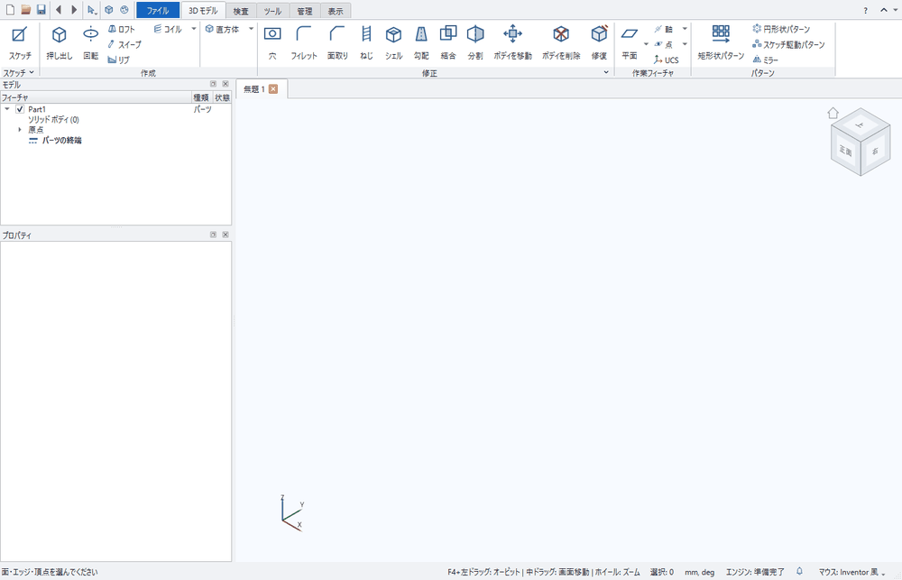
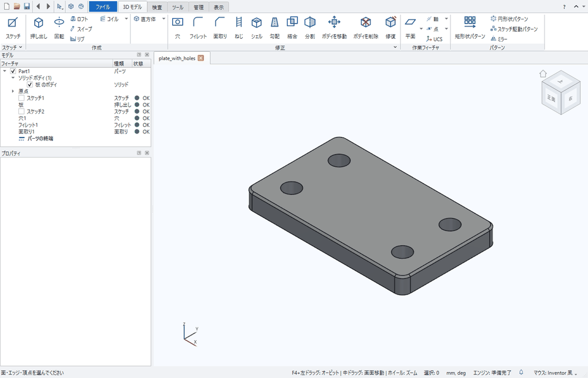
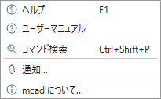

はじめに
EMRM-Studio は、パラメトリックな 3D CAD（mcad）と、その形状で解く 3 次元の電磁場解析（有限要素法）を一つにしたソフトウェアです。加速器のマグネット・加速空洞・カプラー・電子銃の電極の設計に使います。この章では、マニュアルの読み方、動作環境、起動の方法、初めて起動したときの質問、試して遊べる題材の場所を説明します。
このマニュアルについて
このマニュアルは、EMRM-Studio の機能を画面を見ながら順に試すために書いています。CAD の操作の用語・リボンの並び・キーは Autodesk Inventor（日本語版）に合わせてあります。Inventor と違うところは、Inventor との違いの囲みで知らせます。
マニュアルは 3 つの部に分かれています。形状を作る CAD（第 I 部）、その形状で解く電磁場解析（第 II 部）、ほかのプログラムとの連携・カスタマイズ・自動化（第 III 部）です。電磁場解析を初めて使うときは、第 14 章で解析の種類（スタディ）を見てから、第 15 章の例題を試してください。
今の版は、単品の部品を作る CAD と、静磁場・共振モード・ポート解析・静電場・電子銃の 5 種類のスタディに対応しています。アセンブリと図面は含みません。
| 章 | 内容 |
|---|---|
| 第 1 章・第 2 章 | 画面の構成と視点の操作: リボン、ブラウザ、プロパティ パネル、ステータスバー、マウス、ViewCube |
| 第 3 章 | はじめての部品: 穴付きの板を一から作る（チュートリアル） |
| 第 4〜13 章 | CAD の機能: スケッチ、作業フィーチャ、フィーチャ、ボディ、ブラウザ、パラメータ、構成、検査、ファイル |
| 第 14 章・第 15 章 | 電磁場解析のはじめに（スタディの種類と選び方）と、はじめての電磁場解析（ソレノイドの例題） |
| 第 16・17 章 | スタディの共通の設定（材料・対称面・メッシュ・実行）と、結果の見方 |
| 第 18〜24 章 | スタディごとの説明: 静磁場（コイル・双極電磁石の例題）、共振モード、ポート解析、静電場（電子銃の電極の例題）、電子銃（ビームの例題） |
| 第 25 章 | 電磁場解析で困ったとき |
| 第 25〜29 章 | 他の解析プログラムに形を渡す（名前付き STEP）、カスタマイズ、自動化、困ったとき |
| 付録 A〜D | コマンド・ショートカット・フィーチャのパラメータの一覧（アプリの定義から自動で作ります）、用語の対応表 |
読み方と表記
手順は番号を付けて書きます。画面に出る名前（ボタン・タブ・欄・ダイアログなど）は、［押し出し］のように囲みます。キーは Ctrl+S のように書きます。
リボンの［3D モデル］タブ → ［作成］パネル → ［押し出し］をクリックします。
プロパティ パネルの［距離 A］に
10と入力します。Enter で確定します。
リボンの場所は「タブ → パネル → ボタン」の順に書きます。ボタンの▼はドロップダウンで、中に同じ仲間のコマンドが入っています。囲みは 3 種類あります。
「この機能を試す」の囲みは、試用の題材のどれで試せるかを示します。
ページの上の検索欄（/ で入力欄に移ります）で、マニュアル全体から言葉を探せます。左の目次で章と節を選べます。幅の狭い画面では目次が畳まれ、目次のボタンで開きます。印刷すると、目次や検索を除いた本文だけが出ます。
動作環境
| 項目 | 内容 |
|---|---|
| OS | Windows 11（64 bit） |
| GPU | OpenGL 3.2 以上のドライバが使えること。ソフトウェア OpenGL（GPU の無い仮想マシンなど）には対応していません |
| 画面 | リボンは、幅が足りないと右のパネルから小さいボタンの名前を省き、さらに狭いとパネルを畳みます（押すとそのパネルのコマンドのメニューが出ます）。このマニュアルの写真は幅 1400 px の窓で撮っています |
| 開発版の実行 | Python 3.13。依存するライブラリはリポジトリの README.md と requirements-lock.txt にあります |
起動する
開発版はコマンドラインから起動します。
PowerShell でリポジトリのフォルダに移り、
$env:PYTHONPATH = "src"としてからpython -m emrmを実行します。空のドキュメント（タブの名前は「無題 1」）のウィンドウが開きます。ここから部品を作ります。

図 0-1 起動直後の画面。左にブラウザとプロパティ パネル、中央に 3D ビュー、上にリボンがあります。

起動のときにオプションで状態を決められます。
| コマンド | 動作 |
|---|---|
python -m emrm --open examples\solenoid.emrm | ドキュメントを開いて起動します。繰り返し指定すると複数を開きます（.emrm のほか mcad の .mcad も開けます） |
python -m emrm --language en | 表示言語を英語にします（ja は日本語。既定は日本語） |
python -m emrm --theme dark | ダークのテーマにします（light は明るいテーマ。既定は明るい） |
python -m emrm --demo | 見本の部品（矩形 → 押し出し → 穴 → フィレット）を作って表示します |
python -m emrm --data-dir フォルダ | 設定・ログ・キャッシュを別のフォルダに置きます（試すだけのとき便利です） |
python -m emrm --recover keep | 前回の異常終了で残ったドキュメントの扱い（ask・open・overwrite・discard・keep）を、尋ねずに決めます |
設定とウィンドウの配置は %APPDATA%\EMRM-Studio\、ログとキャッシュは %LOCALAPPDATA%\EMRM-Studio\ に保存されます。--data-dir を付けると、その下に作ります。
初回起動の質問
初めて起動すると、ウィンドウの上に「普段使っている CAD」を 1 つだけ尋ねるダイアログが出ます。マウスで視点を動かす操作を、その CAD に合わせるための質問です。

左の一覧から普段使っている CAD を選びます。迷うときは、初めから選ばれている［Inventor 風］のままにします。
［OK］を押します。
［その他／あとで選ぶ］を選ぶか、Esc で閉じると、設定は変わらず（［Inventor 風］のまま）、この質問は 2 回目から出ません。あとから、ステータスバーの右端のマウスのボタンか、リボンの［ツール］タブ → ［オプション］パネル → ［オプション］の［マウスと視点の操作］のページでいつでも変えられます。詳しくは第 2 章と第 27 章にあります。
試用の題材
リポジトリの samples/ フォルダに、CAD の機能を試すためのドキュメントを置いてあります（電磁場解析の例題は examples/ にあります。第 14 章）。［開く］か、起動のときの --open で開きます。いちど開いた（保存した）ドキュメントは、リボンの［ファイル］の［最近使ったドキュメント］からも開けます（第 1 章）。
python -m emrm --open samples/plate_with_holes.mcad

plate_with_holes.mcad を開いたところ。ブラウザにフィーチャが並び、ビューに板が出ます。| ファイル | 内容 | 使う章 |
|---|---|---|
plate_with_holes.mcad | 穴付きの板（100 × 60 × 10、φ10 の貫通穴 4 つ、フィレットと面取り） | 第 1・2・3・6・12 章 |
stepped_shaft.mcad | 段付きの軸（回転） | 第 2・6 章 |
measure_and_material.mcad | 2 つのボディ（鋼とアルミ）、計測、わざと作った形の問題 | 第 2・12 章 |
housing.mcad | ハウジング（シェル・勾配・リブ・フィレット） | 第 6 章 |
flange.mcad | フランジ（円形状パターン） | 第 7 章 |
l_bracket.mcad | L ブラケット（リブ・ミラー） | 第 7 章 |
sketch_projection.mcad | スケッチの投影・楕円・スプライン・文字 | 第 4 章 |
primitives.mcad | プリミティブ（直方体・円柱・球） | 第 6 章 |
pipe_sweep.mcad・loft_transition.mcad・coil_spring.mcad | スイープ（パイプ）・ロフト（ダクトの継手）・コイル（二重ばね） | 第 7・10 章 |
jis_holes.mcad | JIS の規格穴・ねじ・可変半径のフィレット | 第 6・7 章 |
parametric_plate.mcad | ユーザー パラメータと式で決まる板 | 第 10 章 |
split_bodies.mcad | 金型の割り型（ボディの結合・分割・移動、名前付き STEP） | 第 8・24 章 |
imported_parts.mcad と import/ | STEP・BREP・STL の取り込みと修復 | 第 13 章 |
ヘルプとマニュアル
アプリの中からも、このマニュアルとコマンドの説明を開けます。
リボンの右端の［ヘルプ］（?）のメニューから［ユーザーマニュアル］を選ぶと、このマニュアルが既定のブラウザで開きます。
リボンのボタンの上にマウスを置いて F1 を押すと、そのコマンドの説明（キー・リボンの場所・使えるモード）が出ます。説明の［マニュアルで詳しく］を押すと、付録 A のコマンド一覧の、そのコマンドの行が開きます。
何もない所で F1 を押すと、全コマンドの一覧（検索できます）が出ます。


マニュアルは日本語です。表示言語を英語にしても、マニュアルは日本語のものを開きます。